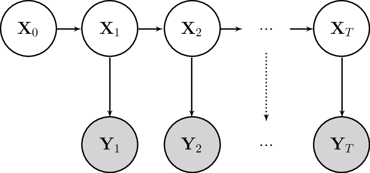

SSMProblems
Installation
In the julia REPL:
] add SSMProblemsDocumentation
SSMProblems defines a generic interface for state space models (SSMs). Its main objective is to provide a consistent interface for filtering and smoothing algorithms to interact with.
Consider a standard (Markovian) state-space model from[Murray]: 
The following three distributions fully specify the model:
- The initialisation distribution, $f_0$, for the initial latent state $X_0$
- The transition distribution, $f$, for the latent state $X_t$ given the previous $X_{t-1}$
- The observation distribution, $g$, for an observation $Y_t$ given the state $X_t$
The dynamics of the model are given by,
\[\begin{aligned} x_0 &\sim f_0(x_0) \\ x_t | x_{t-1} &\sim f(x_t | x_{t-1}) \\ y_t | x_t &\sim g(y_t | x_{t}) \end{aligned}\]
and the joint law is,
\[p(x_{0:T}, y_{0:T}) = f_0(x_0) \prod_t g(y_t | x_t) f(x_t | x_{t-1}).\]
We can consider a state space model as being made up of two components:
- A latent Markov chain describing the evolution of the latent state
- An observation process describing the relationship between the latent states and the observations
Through this lens, we see that the distributions $f_0$, $f$ fully describe the latent Markov chain, whereas $g$ describes the observation process.
A user of SSMProblems may define these three distributions directly. Alternatively, they can define a subset of methods for sampling and evaluating log-densities of the distributions, depending on the requirements of the filtering/smoothing algorithms they intend to use.
Using the first approach, we can define a simple linear state space model as follows:
using Distributions
using SSMProblems
struct SimpleLatentDynamics <: LatentDynamics end
function distribution(rng::AbstractRNG, dyn::SimpleLatentDynamics; kwargs...)
return Normal(0.0, 1.0)
end
function distribution(rng::AbstractRNG, dyn::SimpleLatentDynamics, step::Int, state::Float64; kwargs...)
return Normal(state, 0.1)
end
struct SimpleObservationProcess <: ObservationProcess end
function distribution(
obs::SimpleObservationPRocess, step::Int, state::Float64, observation::Float64; kwargs...
)
return Normal(state, 0.5)
end
# Construct an SSM from the components
dyn = SimpleLatentDynamics()
obs = SimpleObservationProcess()
model = StateSpaceModel(dyn, obs)There are a few things to note here:
- Two methods must be defined for the
LatentDynamics, one containingstep/statearguments and used for transitioning, and one without these, used for initialisation. - Every function should accept keyword arguments. This is key feature of
SSMProblemsthat allows it to flexibly represent more exotic models without any performance penalty. You can read more about it here. - If your latent dynamics and observation process cannot be represented as a
Distributionobject, you may implement specific methods for sampling and log-density evaluation as documented below.
These distribution definitions are used to define simulate and logdensity methods for the latent dynamics and observation process. Package users can then interact with the state space model through these functions.
For example, a bootstrap filter targeting the filtering distribution $p(x_t | y_{0:t})$ using N particles would roughly follow:
dyn, obs = model.dyn, model.obs
for (i, observation) in enumerate(observations)
idx = resample(rng, log_weights)
particles = particles[idx]
for i in 1:N
particles[i] = simulate(rng, dyn, i, particles[i])
log_weights[i] += logdensity(obs, i, particles[i], observation)
end
endFor more thorough examples, see the provided example scripts.
Interface
SSMProblems.AbstractStateSpaceModel — TypeAn abstract type for state space models.
Any concrete subtype of AbstractStateSpaceModel should implement a method for AbstractMCMC.sample which performs forward simulation. For an example implementation, see AbstractMCMC.sample(::StateSpaceModel).
For most regular use-cases, the predefined StateSpaceModel type, documented below, should be sufficient.
SSMProblems.LatentDynamics — TypeLatent dynamics of a state space model.
Any concrete subtype of LatentDynamics should implement the functions logdensity and simulate for transition dynamics. Whether each of these functions need to be implemented depends on the exact inference algorithm that is intended to be used.
Alternatively, you may specify a method for the function distribution which will be used to define the above methods.
All of these methods should accept keyword arguments through kwargs... to facilitate inference-time dependencies of the dynamics as explained in Control Variables and Keyword Arguments.
SSMProblems.ObservationProcess — TypeObservation process of a state space model.
Any concrete subtype of ObservationProcess must implement the logdensity method, as defined below. Optionally, it may also implement simulate for use in forward simulation of the state space model.
Alternatively, you may specify a method for distribution, which will be used to define both of the above methods.
All of these methods should accept keyword arguments through kwargs... to facilitate inference-time dependencies of the observations as explained in Control Variables and Keyword Arguments.
SSMProblems.StatePrior — TypeInitial state prior of a state space model.
Any concrete subtype of StatePrior should implement the functions logdensity and simulate as defined below.
Alternatively, you may specify a method for the function distribution which will be used to define the above methods.
SSMProblems.StateSpaceModel — TypeA state space model.
A vanilla implementation of a state space model, composed of an initail state prior, latent dynamics and an observation process.
Fields
prior::PT: The initial state prior fo the state space model.dyn::LD: The latent dynamics of the state space model.obs::OP: The observation process of the state space model.
Parameters
PT: The type of the initial state prior.LD: The type of the latent dynamics.OP: The type of the observation process.
SSMProblems.batch_logdensity — Methodbatch_logdensity([rng::AbstractRNG], dyn::LatentDynamics, new_states; kwargs...)
Compute the log-densities of a batch of initial states for the latent dynamics.
The method should return the log-densities of a batch of initial states `new_states`
for the initial time step of the latent dynamics.
See also [`LatentDynamics`](@ref).SSMProblems.batch_logdensity — Methodbatch_logdensity([rng::AbstractRNG], dyn::LatentDynamics, step::Integer, prev_states, new_states; kwargs...)
Compute the log-densities of a batch of transitions of the latent dynamics.
The method should return the log-densities of a batch of states `new_states` for the
current time step, `step`, given the previous states, `prev_states`.
See also [`LatentDynamics`](@ref).SSMProblems.batch_logdensity — Methodbatch_logdensity([rng::AbstractRNG], obs::ObservationProcess, step::Integer, state, observations; kwargs...)
Compute the log-densities of a batch of observations given the current states.
The method should return the log-densities of a batch of observations `observations`
given the current states `states` at time step `step`.
See also [`ObservationProcess`](@ref).SSMProblems.batch_simulate — Methodbatch_simulate([rng::AbstractRNG], dyn::LatentDynamics, step::Integer, prev_states; kwargs...)
Simulate a batch of transitions of the latent dynamics.
The method should return a batch of random states for the current time step, `step`,
given the previous states, `prev_states`.
See also [`LatentDynamics`](@ref).SSMProblems.batch_simulate — Methodbatch_simulate([rng::AbstractRNG], dyn::LatentDynamics, N::Integer; kwargs...)
Simulate a batch of initial states for the latent dynamics.
The method should return a batch of random initial states for the first time step of the
latent dynamics. The batch size is determined by the `N` argument.
See also [`LatentDynamics`](@ref).SSMProblems.batch_simulate — Methodbatch_simulate([rng::AbstractRNG], obs::ObservationProcess, step::Integer, states; kwargs...)
Simulate a batch of observations given the current states.
The method should return a batch of random observations given the current states
`states` at time step `step`.
See also [`ObservationProcess`](@ref).SSMProblems.distribution — Methoddistribution(dyn::LatentDynamics, step::Integer, prev_state; kwargs...)Return the transition distribution for the latent dynamics.
The method should return the distribution of the current state (at time step step) given the previous state prev_state. The returned value should be a Distributions.Distribution object that implements sampling and log-density calculations.
See also LatentDynamics.
Returns
Distributions.Distribution: The distribution of the new state.
SSMProblems.distribution — Methoddistribution(obs::ObservationProcess, step::Integer, state; kwargs...)Return the observation distribution for the observation process.
The method should return the distribution of an observation given the current state state at time step step. The returned value should be a Distributions.Distribution object that implements sampling and log-density calculations.
See also ObservationProcess.
Returns
Distributions.Distribution: The distribution of the observation.
SSMProblems.distribution — Methoddistribution(prior::StatePrior; kwargs...)Return the transition distribution for the latent dynamics.
The method should return the distribution of the initial state of the latent dynamics. The returned value should be a Distributions.Distribution object that implements sampling and log-density calculations.
See also StatePrior.
Returns
Distributions.Distribution: The distribution of the initial state.
SSMProblems.logdensity — Methodlogdensity(dyn::LatentDynamics, step::Integer, prev_state, new_state; kwargs...)Compute the log-density of a transition of the latent dynamics.
The method should return the log-density of the new state new_state (at time step step) given the previous state prev_state
The default behaviour is to compute the log-density of the distribution return by the corresponding distribution() method.
See also LatentDynamics.
SSMProblems.logdensity — Methodlogdensity(obs::ObservationProcess, step::Integer, state, observation; kwargs...)Compute the log-density of an observation given the current state.
The method should return the log-density of the observation observation given the current state state at time step step.
The default behaviour is to compute the log-density of the distribution return by the corresponding distribution() method.
See also ObservationProcess.
SSMProblems.simulate — Methodsimulate([rng::AbstractRNG], dyn::LatentDynamics, step::Integer, prev_state; kwargs...)Simulate a transition of the latent dynamics.
The method should return a random state for the current time step, step, given the previous state, prev_state.
The default behaviour is generate a random sample from distribution returned by the corresponding distribution() method.
See also LatentDynamics.
SSMProblems.simulate — Methodsimulate([rng::AbstractRNG], process::ObservationProcess, step::Integer, state; kwargs...)Simulate an observation given the current state.
The method should return a random observation given the current state state at time step step.
The default behaviour is generate a random sample from distribution returned by the corresponding distribution() method.
See also ObservationProcess.
SSMProblems.simulate — Methodsimulate([rng::AbstractRNG], prior::StatePrior; kwargs...)Simulate an initial state for the latent dynamics.
The method should return a random initial state for the first time step of the latent dynamics.
The default behaviour is generate a random sample from distribution returned by the corresponding distribution() method.
See also StatePrior.
StatsBase.sample — Methodsample(model::AbstractStateSpaceModel, T::Integer; kwargs...)Simulate a trajectory using the default random number generator.
StatsBase.sample — Methodsample([rng::AbstractRNG], model::StateSpaceModel, T::Integer; kwargs...)Simulate a trajectory of length T from the state space model.
Returns a tuple (xs, ys) where xs is a vector of latent states (including the initial state) and ys is a vector of observations.
SSMProblems.SSMProblems — ModuleA unified interface to define state space models in the context of particle MCMC algorithms.
- Murray
Murray, Lawrence & Lee, Anthony & Jacob, Pierre. (2013). Rethinking resampling in the particle filter on graphics processing units.